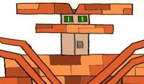

731 bloggposter fra 2006 til 2026 om objektorientert og funksjonell programmering, smidige teknikker, metaprogrammering og DSL'er, språk som C#, F#, Ruby, JavaScript, Erlang og Clojure, generelle meningsytringer og mye mer..
mandag 11. februar 2019
Jeg fortsetter å lese Mazes for Programmers og å leke meg med labyrinter. Om dette kommer som en stor overraskelse så vil du kanskje lese min forrige blogpost først: Generere labyrinter (i Go). Siden forrige gang har jeg gjort en hel del; jeg har laget et prosjekt rundt koden min, og du finner d [...]
fredag 11. januar 2019
Jeg har akkurat begynt å lese boken Mazes for Programmers fra The Pragmatic Bookshelf, skrevet av Jamis Buck. Og dette er en skikkelig nerdebok, et dypdykk i algoritmer og teknikker for å generere labyrinter. Eksemplene i boken bruker Ruby, men språket jeg ønsker å bruke for tiden er Go. I kapit [...]
fredag 28. september 2018
Nå er det omtrent en måned siden jeg begynte som konsulent i Bouvet, etter 9 år i PSWinCom / LINK Mobility. Så jeg tenkte jeg skulle dele litt om hvordan denne første tiden har vært.. Bouvet er et firma med mange ansatte - over 1300 har jeg hørt - og de er gode på å ta i mot nye folk. Da jeg møtte o [...]
mandag 27. august 2018
Våren 2009 ble jeg kjent med et lite vestlandsfirma som het PSWinCom. De drev med SMS, og var så hyggelige og imøtekommende at jeg bestemte meg for å begynne å jobbe for dem. I dag kan jeg se tilbake på ni spennende og ikke minst morsomme år sammen med Verdens Beste Kollegaer. I løpet av disse n [...]
tirsdag 1. mai 2018
I dag har jentungen (8 år) og jeg programmert sammen for første gang, og vi storkoste oss! Jeg har lenge fortalt henne at jeg har lyst å lære henne koding, og i dag hadde hun lyst. Så jeg lastet ned SmallBasic og så begynte vi å utforske sammen. Jeg viste henne hvordan man kunne få en skillpadde t [...]
Erlang er et veldig spennende språk og platform for å lage skalerbare serverløsninger som yter maksimalt.
Nim er et statisk typet, effektivt språk med kraftige makroer og behagelig syntaks.

F# er et kraftig språk i ML-familien som kombinerer funksjonell programmering og objektorientering på .NET og Mono.
Noen utvalgte tags:
Bøker
C#
Clojure
Erlang
Julekalender
Ledelse
Meninger
OO Patterns
Liste over alle tags »